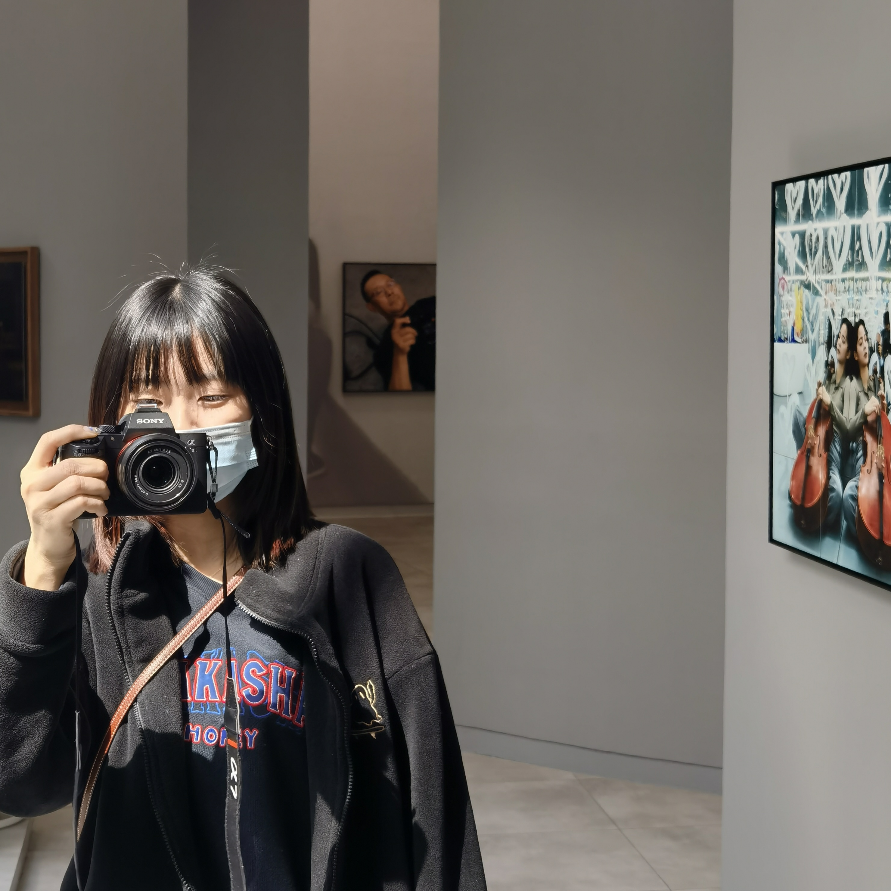

Eadin Wang
Interested in Connections & Communications
Design / Art / New Media
My Text Overlay
osc(40)
.color([.9,.8,.7],[.6,1,.4,1],[1,0,1,1])
.colorama([0.8,0.23])
.saturate(0.4)
.brightness(0.4)
.out(o1)
src(o1)
.color(0,0,0,1)
.layer(o1)
.modulate(noise(5,.01))
.layer(shape(3).luma())
.rotate(() = > time/2)
.out(o2)
render(o2)
About

My name is Eadin/翌婷！
Grown up in China
Currently a junior studying Interactive Media Arts at NYU Shanghai
ON: I'm interested in interactive media, design, philosophy of tech, psychology and communication.
OFF: I'm interested in photography, Japanese TV shows and observing my surroundings.
Currently paving my way for a product design/HCI related career.